Das Logbuch kann sofort verwendet werden, alle Dateien werden beim ersten Start erzeugt.
Alle Daten werden automatisch beim Beenden des Plugins oder OpenCPN gespeichert.
Zur Anzeige oder Bearbeitung von ODT-Dateien muß ein ODT-Programm installiert sein.
Es wird OpenOffice oder LibreOffice empfohlen, MS Word startet nur, wenn der
Pfad
entsprechend eingegeben wurde.
Zum Ändern/Erzeugen von Layouts im ODT-Format verwenden Sie bitte Libre-/OpenOffice.
* Empfohlen *
Sollen in den Feldern Wasser (gesamt), Treibstoff (gesamt) oder AH #1 oder AH #2 die Daten in Bruchteilen (1/2, 1/4) eingegeben werden, geben Sie bitte
die Daten in Logbuch-Optionen/Kapazität ein.
Für den Wassermacher (falls vorhanden) geben Sie die Wassererzeugung pro Stunde ein
* Empfohlen *
Geben Sie folgende Daten unter der Boots-Lasche ein: Boots-Name, Heimathafen
* Optional *
Geben Sie die Daten der Crew unter der Crewlisten-Lasche ein und erzeugen Sie eine Wachliste
Klicken Sie den Button "Neue Zeile" (es sollten die GPS- und NMEA-Daten erscheinen)
Wählen Sie ein Layout
(bitte wählen Sie kein Wolken-Layout, ich erkläre das
hier )
Wählen Sie den Radio-Button HTML
Klicken Sie den "Anzeigen" Button (Ihr Browser öffnet eine neue Lasche und zeigt die Daten an)
Wählen Sie den Radio-Button ODT
Klicken Sie den "Anzeigen" Button (Ihr ODT-Programm öffnet mit den Daten)
Schließen Sie das ODT-Programm (Wichtig! Sonst werden nur alte Daten angezeigt)
Wählen Sie ein anderes Layout.
Klicken Sie den "Anzeigen" Button (Ihr ODT-Programm öffnet die Daten mit dem neuen Layout)
Ausführliche Hilfe
Optionen
Für eine Erklärung klicken Sie bitte in die Felder. Die Laschen bringen Sie zum nächsten Bild.
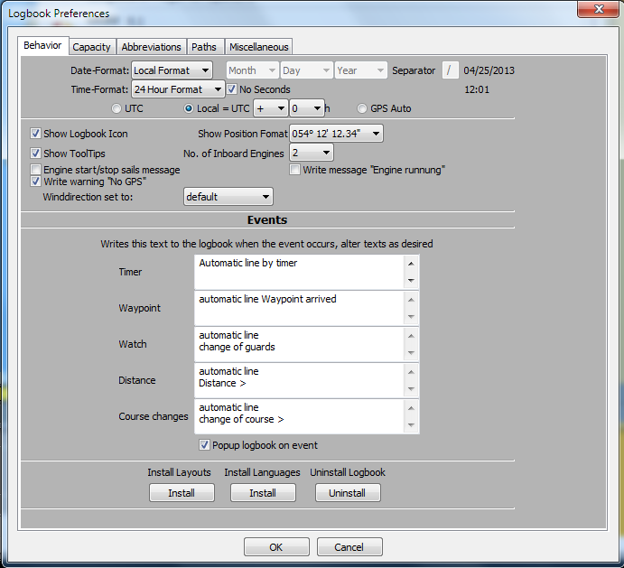
Datums-Format
Hat zwei Auswahlen:
Lokal und individuell
Lokal
verwendet das Datums-Format, das im OpenCPN-Hauptprogramm mit der Sprache gewählt wurde. Die drei Datumsformat-Wahlboxen und der Separator sind abgeschaltet.
Individuell verwenden Sie diese Option, wenn das lokale Format geändert werden soll, z.B. für Anwender ohne Übersetzung in ihre Sprache und das OpenCPN-Hauptprogramm
wurde auf englisch gesetzt oder für UK/Australien bei Anwendung eines anderen Datums-Formats als USA.
Datums-Format Auswahl
verwenden Sie diese drei Auswahlboxen zur Wahl des Datums-Formats.
Das Format wird hinter der Separator-Textbox gezeigt.
Separator
fügen Sie den gewünschten Separator für das Datum ein.
Das Format wird hinter der Separator-Textbox gezeigt.
Zeit-Format
diese Wahlbox ist in Ländern mit 24-Stunden-Format deaktiviert, das hängt von der Sprach-Wahl im OpenCPN-Hauptprogramm ab.
In Ländern mit 12-Stunden-Format kann zwischen 12- und 24-Stunden-Format gewechselt werden,
zum Beispiel für Anwender ohne Übersetzung von OpenCPN in ihre Sprache und englisch im OpenCPN-Hauptprogramme.
Keine Sekunden
wenn gewählt, werden keine Sekunden benutzt, gespeichert und angezeigt.
Zeige Logbuch-Symbol
hinzufügen/löschen des Icons in der Werkzeugleiste von OpenCPN
Zeige Positions-Format
ändert das Format auf der Anzeige-Ebene.
12° 45 ' 30 "oder 12° 45,5'
Beim Ändern eines vorher erzeugten Logbuches werden die Einträge nicht in das neue Format konvertiert!
Zeige Tooltips
zeigt die kleinen Hilfstexte
Anzahl Motoren
Wählen Sie die Anzahl der Motoren Ihres Boots.
Es setzt die Motor/Segel-Tabelle auf ein oder zwei Motoren, wählt das richtige HTML/ODT-Layout und deaktiviert den
zweiten Motor in NMEA-Optionen mit Wahl eines Motors.
Motor Start/Stop Segel Nachricht
Checkbox aktiviert:
Bei Motor Start:
alle Segel sind deaktiviert und die Nachricht "Segel runter" erscheint in
Motor/Segel Bemerkungen
Bei Motor Stop:
alle Segel mit einem Haken erscheinen in Motor/Segel Spalte "Segel" und
die Nachricht "Segel hoch" erscheint in Spalte "Bemerkungen"
Für Motorboote wird diese Option immer deaktiviert.
Schreibe Nachricht "Motor läuft"
Wenn der Motor läuft, kann die Nachricht "Motor #1 läuft" unterdrückt werden.
Segelboote sollten immer einen Haken setzen,
Motorboote können es deaktivieren, um nicht fortwährend die Nachricht zu bekommen.
Schreibe Warnung Kein GPS
wenn kein GPS verwendet wird oder es defekt ist, erscheint fortwährend die Nachricht 'Kein GPS'.
Mit Entfernen des Hakens wird die fortwährende Wiederholung der Nachricht 'Kein GPS' in 'Bemerkungen' unterdrückt.
Windrichtung setzen auf
kann entweder auf "default" = relativ zum Schiff oder auf "Richtung" = Windrichtung eingestelt werden.
'Richtung' ist nur verfügbar, wenn ein Gerät da ist, das die NMEA-Sequenzen $HDT oder $HDM sendet, sonst wird automatisch 'default' verwendet.
Automatische Zeilen
Ereignisse können in der Statuszeile des Logbuchs gestartet/unterdrückt/gestoppt werden.
Der hier eingetragene Text wird angezeigt, wenn ein Ereignis eintritt.
Text Wegpunkt erreicht
setzt diesen Text in 'Bemerkungen', wenn ein Wegpunkt-Ereignis eintritt.
Text Wache gewechselt
setzt diesen Text in 'Bemerkungen', wenn ein Wachwechsel stattfindet.
Text Entfernung
setzt diesen Text in 'Bemerkungen', wenn ein Entfernungs-Ereignis eintritt.
Text Kurs geändert
setzt diesen Text in 'Bemerkungen', wenn ein Kursänderungs-Ereignis eintritt.
Text Timer
setzt diesen Text in 'Bemerkugen', wenn ein Timer-Ereignis eintritt.
UTC/Lokal/GPS Auto
GPS sendet Zeit-Daten in UTC
Markieren Sie diesen Radio-Button, wenn die Zeit im Logbuch auf UTC gesetzt werden soll.
Markieren Sie den Lokal Radio-Button, wenn die Zeit im Logbuch auf lokale Zeit gesetzt werden soll. Wählen Sie +/- und Ihre Zeitzone.
GPSAuto setzt die lokale Zeit ( Formel: +/- (Ihre Länge/15) ) im Feld 'Zeit'
Beispiel: UTC=15:00h (03:00 PM), bei 30°W (-2h) = 13:00h (01:00 PM), diese Zeit wird im Logbuch eingetragen.
Die echte lokale Zeitzone wird nicht beachtet.
Zur Dokumentation wird eine Korrektur in der Klappmenü-Box für die Zeitzone gemacht.
Installiere Layouts
Suche im Dateienfenster nach der Datei 'LogbookKonni_Layouts.zip'.
Windows braucht diesen Button nur zur Installation von Layout-Updates.
Alle Layouts werden mit dem Exe-Installer kopiert.
Installiere Sprachen
nur bei Linux und Apple verwendet.
Bei Windows wird dieser Button nur Übersetzungs-Updates gebraucht. Alle Übersetzungen erfolgen durch den Installer.
Linux Bemerkungen
Ein installierter und funktionierender sudo Befehl ist erforderlich!
Wie Sprachen manuell installiert werden:
Geben Sie folgenden Befehl im Terminal ein: find /usr -name opencpn.mo
Er sollte eine Ausgabe geben wie: /usr/local/share/locale/nl/LC_MESSAGES/opencpn.mo
Der Sprachen-Installations-Pfad ist in diesem Fall /usr/local/share/locale
Ändern Sie /usr in ein anderes Verzeichnis (z.B. /opt), wenn nichts gefunden wurde.
starten Sie als Administrator den Befehl
unzip -o Pfad_zu_LogbookKonni_Languages.zip -d Ihr_Sprachen-Install-Pfad
Nur Windows:
Nach Klicken des Buttons schließen Sie OpenCPN. Im Dateienfenster wählen Sie 'uninst_logbookkonni_pi.exe'. Nach der Deinstallation
kann OpenCPN wieder gestartet werden.
Das Plugin wird sauber deinstalliert, wenn diese Anweisung befolgt wird.
Für eine Erklärung klicken Sie bitte in die Felder. Die Laschen bringen Sie zum nächsten Bild.
Die folgenden Einträge sind notwendig, wenn Werte in den Feldern
Wasser-, Treibstoff (gesamt), AH #1, AH #2 und der Wassermacher-Ausgang
in Bruchteilen (1/2,1/4) eingetragen werden sollen.
Wassertank
die Kapazität des Wassertanks
Wassermacher
der Ausgang des Wassermachers pro Stunde
Treibstoff-Tank
Kapazität des Treibstoff-Tanks
Batteriebank #1
Kapazität der Batteriebank #1
Batteriebank #2
Kapazität der Batteriebank #2
Für eine Erklärung klicken Sie bitte in die Felder. Die Laschen bringen Sie zum nächsten Bild.
Abkürzungen
Ist eine Übersetzung des Logbuch-Plugins in Ihrer Sprache verfügbar, werden die Daten korrekt angezeigt.
Aber Sie können jedes Feld ändern (z.B. von (gal) in (l)iter und (l)iter wird beim nächsten Logbuch-Eintrag benutzt). Die Einstellung
wird beim Schließen von OpenCPN gespeichert und ist beim nächsten Start der Standard.
Windgeschwindigkeit/-richtung
Ohne einen NMEA-Windmesser oder GPS ohne Funktion wird diese Option für Wind benutzt.
Ein NMEA-Windmesser sendet die Daten automatisch, so daß diese Option nur bei der manuellen Dateneingabe verwendet wird.
Für eine Erklärung klicken Sie bitte in die Felder. Die Laschen bringen Sie zum nächsten Bild.
Pfad zum ODT-Editor
die empfohlenen ODT-Editoren sind Open- oder LibreOffice.
Ist OpenOffice/LibreOffice installiert, wird der Pfad automatisch gesetzt.
Bei einer MS-Word Installation wird der Pfad nicht richtig angezeigt. Bitte klicken Sie auf das Ordner-Symbol, suchen Sie die Datei 'WINWORD.EXE' und klicken Sie OK.
Im Zeileneditor-Feld fügen Sie ein '%s' hinzu.
"C:\IhrPfadZuWord\WINWORD.EXE" %s
Word zeigt an, daß es die Datei "repariert", aber zeigt dann das Layout ohne Daten.
Empfohlen wird die Verwendung von Open- oder LibreOffice zum Ändern oder Erzeugen eines Layout.
Pfad zum Dateimanager
Für Windows ist der Explorer vordefiniert.
Für Linux ist Dolphin (KDE) vordefiniert, bei Apple ist es der Finder.
Pfad zum Mail-Programm
*Optional*
Nur verwendet, wenn ein Layout per eMail an z.B. einen Freund gesendet werden soll.
Pfad zum HTML-Editor
*Optional*
Soll ein HTML-Layout geändert werden, setzen Sie bitte den Pfad zum Editor hier.
Diese Option ist nur erforderlich, wenn ein Layout geändert oder erzeugt werden soll. Zur Anzeige der Daten dient der Browser.
Dateien-Dialog
Öffnet einen Dateien-Dialog.
Reset Pfade
Setzt die Pfade zurück auf vordefinierte Werte.
Für eine Erklärung klicken Sie bitte in die Felder. Die Laschen bringen Sie zum nächsten Bild.
Zur Anzeige von KML-Dateien brauchen Sie Google-Earth.
Zeige Route/Track
Wählen Sie eines oder beide zum Export von Routen/Tracks nach Google-Earth.
Setze Linienbreite auf
Setzt die Linienbreite für Routen/Tracks.
Setze Transparenz auf
Setzt die Linie auf Transparenz oder Fest.
Setzt Routen-Linienfarbe
Setzt die Farbe für die Routenlinie.
Setzt Track-Linienfarbe
Setzt die Farbe für die Tracklinie.
Für eine Erklärung klicken Sie bitte in die Felder. Die Laschen bringen Sie zum nächsten Bild.
Verwende ERRPM-Sequenz
Erklärung?
Check
Erklärung?
Motornummer entspricht Spalte Motor #1
Erklärung?
Motornummer entspricht Spalte Motor #2
Erklärung?
Verwende ERRPM-Sequenz zur Berechnung Motorstunden
Erklärung?
Verwende WIMDA-Sequenz von der Wetterstation
Erklärung?
Für eine Erklärung klicken Sie bitte in die Felder / Die Laschen bringen Sie zum nächsten Bild.
Für eine Erklärung klicken Sie bitte in die Felder / Die Laschen bringen Sie zum nächsten Bild.
Strg-Linker-Mausklick oder Ziehen über die Zeilenköpfe wählt mehrere Zeilen aus.
Ein Rechtsklick zeigt dann ein Menü zum Löschen mehrerer Zeilen oder Umdrehen von Tag/Monat des Datums, z.B. 12/8/2012 in 8/12/2012.
Dies ist nur nötig, wenn etwas beim Konvertieren des Datumsformats falsch lief, z.B. es wurden vorher zwei verschiedene Datumsformate im Logbuch verwendet.
Es muß mindestens eine Zeile gewählt sein, damit dieses Menü erscheint.
Das Rechtsklick-Menü ist in jeder Spalte der Tabelle erreichbar.
In folgenden Spalten ist das Menü erweitert:
Lösche Zeile löscht eine einzige Zeile im Logbuch unter dem Maus-Cursor. Bevor die Daten gelöscht werden, erscheint eine Sicherheits-Abfrage (Ja/Nein).
Zeige versteckte Spalten
zeigt alle vorher versteckten Spalten.
Verstecke Spalte
versteckt eine Spalte,
aber die Spalte wird in Ihrem Browser/ODT-Programm angezeigt.
Sie können ein Layout wie gewünscht ändern.
Haben Sie unbeabsichtigt eine Spalte versteckt, können Sie die Spalte wieder hervorholen, wenn Sie mit der Maus zum linken Separator gehen
(der Mauszeiger ändert sich) und verschieben es nach rechts.
Suche im Logbuch
Öffnet einen Dialog zur Suche im Logbuch.
- Siehe Bild -
Logbuch Schließen
Normalerweise läuft das Logbuch nach Aktivierung im Hintergrund, bis OpenCPN geschlossen wird.
Soll das Logbuch komplett geschlossen werden, verwenden Sie diese Option. Es werden dann keine Ereignisse mehr erhalten und der Speicher wird geleert!
Starten Sie das Logbuch erneut mit Klick auf die Werkzeugleiste.
Textblöcke
Damit nicht immer wieder der gleiche Text eingegeben werden muß, kann man in den folgenden Spalten Textblöcke verwenden:
Die Textblöcke werden mit dem Rechtsklick-Menü gewählt.
Mit einem Rechtsklick in die oben genannten Spalten erhält man ein erweitertes Rechtsklick-Menü.
Wählt man 'nutze Textblöcke...', dann erscheint der Dialog rechts.
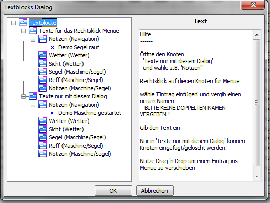
In diesem Dialog gibt es zwei Baumknoten mit identischen Unterknoten.
Der Unterschied ist, daß mit 'Texte für das Rechtsklick-Menü' die Namen eines Eintrags oben im Rechtsklick-Menü erscheinen (hier im Beispiel
'Demo Segel rauf') und mit einem Klick eingefügt werden können, während in 'nutze Textblöcke' der Textblock in diesem Dialog zum Einsetzen
gewählt werden muß. Somit plaziert man nicht so oft gewählte Textblöcke hier, um das Menü nicht zu überfrachten.
Die Einträge 'Notizen (Navigation)' und 'Notizen (Maschine/Segel)' korrespondieren zu den Spalten in der Tabelle.
Textblöcke können mit Drag 'n Drop verschoben werden.
Beispiel:
Verschieben Sie den Eintrag 'Demo Maschine gestartet' in 'Notizen (Maschine/Segel)' mit Drag'n Drop zu 'Notizen (Navigation)' in 'Texte für das Rechtsklick-Menü'.
Klicken Sie Abbruch (um nicht sofort einzufügen) und rufen Sie in Lasche 'Navigation' die Spalte 'Notizen' mit Rechtsklick-Menü auf.
Der Name des TextBlocks 'Demo Maschine gestartet' erscheint im Menü und der Text wird mit einem Klick auf den Menü-Eintrag eingefügt.
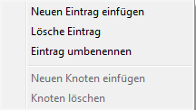
Mit einem Rechtsklick auf einen Baumknoten z.B. 'Wetter' erscheint dieses Menü.
Wenn man 'Neuen Eintrag einfügen' in dem Baumknoten 'Wetter' wählt, wird ein neuer Eintrag angefügt.
Geben Sie einen Namen für den Textblock ein und achten Sie bitte auf einmalige Namen. Im Texteditor geben Sie nun den gewünschten Text ein. Geben Sie auf
diese Weise weitere Textblöcke ein. Klick auf OK fügt den Text sofort ein, Klick auf Abbruch speichert nur den Text, aber fügt ihn nicht ein.
Lösche Eintrag - macht genau dies
Eintrag umbenennen - Textblock wird umgenannt
Neuen Knoten einfügen - nur in 'Texte nur mit diesem Dialog'
Zur besseren Übersicht ist es möglich, einen neuen Knoten einzufügen und dort neue Einträge einzugeben.
Knoten löschen - nur in 'Texte nur mit diesem Dialog'
löschte einen Knoten
und alle Einträge in ihm.
Textblock-Beispiel
Gehe zum 'Logbuch', wähle Lasche 'Maschine/Segel' und klicke mit rechter Maustaste in das Feld 'Segel'.
Wähle 'nutze Textblöcke...' und die folgenden Dialog Popups.
hier wähle 'Neuen Eintrag einfügen'
überschreibe den Eintragnamen
mit 'Hoisted M/G/'
und füge im Textfeld rechts ein
'Hoisted Main and Genua 130'
Klicke den OK-Button, der Text wird in das Segel-Feld im Logbuch eingefügt.
Gehe zum nächsten Segel-Feld darüber oder darunter, Rechtsklick, wähle 'nutze Textblöcke...' , suche den Eintrag 'Hoisted M/G', wähle ihn und klick OK.
Das ist das Vorgehen bei selten benutzten Textblöcken oder zur Verwendung als Parkposition, aber man kann den Eintrag bei öfterem
Gebrauch in das REchtsklick-Menü verschieben.
Siehe nächster Schritt...
Drag'n Drop den Eintrag von 'Texte nur mit diesem Dialog' zu 'Texte für Rechtsklick-Men¨'
- wie im rechten Bild gezeigt -
Klick 'Abbruch' (fügt den Eintrag jetzt nicht ein)
Rechtsklick in das Logbuch-Feld 'Segel' zeigt nun den Eintrag.
Mit einem Mausklick auf Menü-Eintrag ist es im Feld eingefügt.
Man kann immer Einträge mit Drag'n Drop von 'Texte nur mit diesem Dialog' zu 'Texte für Rechtsklick-Menü' und umgekehrt verschieben.
'Texte nur mit diesem Dialog' zeigt keine Einträge im Rechtsklick-Menü, sie sind im Rechtsklick-Menü nur erreichbar mit Wahl von 'nutze Textblöcke'
'Texte für Rechtsklick-Menü' werden oben im Rechtsklick-Menü gezeigt.
Die Felder zur Verwendung von Textblöcken sind hier beschrieben.
Für eine Erklärung klicken Sie bitte in das Bild oder auf die Felder oder Buttons/ Die Laschen bringen Sie zum nächsten Bild.
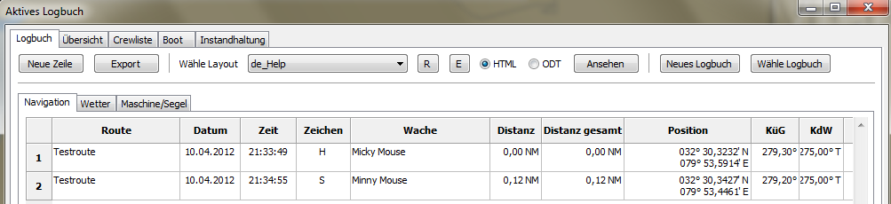
Neue Zeile
Fügt dem Logbuch eine neue Zeile hinzu.
Einige Felder vom Eintrag darüber werden in die neue Zeile kopiert, können aber nach Wunsch überschrieben werden.
Export
Öffnet einen Datei-Dialog.
Man kann die Daten in verschiedenen Formaten auf andere Geräte (z.B. USB-Stick) oder Verzeichnisse sichern.
Folgende Formate werden unterstützt:
HTML, ODT, ODS, XML, CSV, TXT
Ob ODT oder HTML im Klappmenü erscheint, hängt von der Auswahl der HTML/ODT-Radiobuttons neben der Layout Klappmenü Box ab.
Man kann den Button z.B. zum Backup-Erstellen der Daten verwenden (wähle 'Backup'). Bitte nicht den Dateinamen ändern.
Das aktive Logbuch wird immer beim Schließen von OpenCPN gesichert. Man muß den Button nicht klicken.
Import einer CSV-Datei in Libre/OpenOffice:
Wähle Layout
Man kann das gewünschte Layout in der Klappmenü-Box wählen. Mit dem 'Zeige'-Button wird es angezeigt.
R
Reload Neuladen der Layouts in der Klappmenü-Box.
Dieser Button ist nur erforderlich, wenn selber ein neues Layout erzeugt wurde.
E
Öffnet den Editier-Dialog.
Das gewählte Layout wird in der Titelzeile angezeigt.
Editiere Layout
Bevor diese Option genutzt wird, ist sicherzustellen, daß der Pfad zum HTML- und/oder ODT-Editor in Optionen/Pfade gesetzt wurde.
Mit Klick auf OK öffnet der Editor mit dem gewählten Layout aus der Klappmenü-Box. Man erzeugt ein neues Layout oder modifiziert ein vorhandenes wie hier beschrieben.
Filter Layout mit
Wenn man eigene Layouts z.B. mit dem Prefix 'mein' erzeugt hat, kann man mit dieser Option nur eigene Layouts ausfiltern.
Die Klappmenü-Box zeigt alle verfügbaren Prefixe.
Layout umbenennen
Die Layout Namen sind nicht übersetzt. Wenn gewünscht, kann ihnen ein Name in Ihrer Sprache oder sonst ein bedeutungsvoller Name gegeben werden.
Lösche Layout
Wird das Layout nicht gewünscht, kann es mit dieser Option gelöscht werden.
Es ist dann nicht wieder herstellbar.
Sende Layout mit Email
Vor Verwendung dieser Option muß der Pfad zum Email-Programm und Dateimanager (Explorer/Dolphin/Finder) gesetzt sein.
Hat man ein schönes Layout gemacht, kann man es einem Freund senden.
Installation einzelnes Layout
Hat man ein Layout erhalten, kann man es mit dieser Option installieren.
HTML
wählt HTML als Anzeige-Format.
ODT
wählt ODT als Anzeige-Format.
Zeige
Öffnet abhängig von der gewählten Option (HTML oder ODT) den Browser oder das ODT-Programm mit den Daten.
Die folgenden Tips sind nur für das Logbuch.
Es wird die Route im mit 'Wähle Layout' gewählten Layout angezeigt, in dem sich der Mauszeiger befindet.
Zur Auswahl einer anderen Route geht man mit dem Mauszeiger in diese Zeile.
Zur Auswahl des gesamten Logbuchs klickt man
vor Aktivierung dieses Buttons
in die linke obere Ecke der Tabelle. Damit werden alle Daten im Logbuch gewählt.
Neues Logbuch
Erzeugt ein neues Logbuch.
Beantwortet man den Sicherheits-Dialog mit 'Ja', fragt ein weiterer Dialog, ob die letzte Zeile des aktiven Logbuchs zur ersten Zeile des neuen Logbuchs werden soll oder nicht.
'Nein' erzeugt ein komplett neues Logbuch.
Erzeugte Logbücher können mit dem Button 'Wähle Logbuch' angesehen werden.
Wannn man ein neues Logbuch erzeugt, obliegt dem Anwender. Enthält das Logbuch aber mehr als 800 Zeilen, erscheint ein Warn-Dialog.
Wähle Logbuch
Öffnet einen Dialog zur Wahl vorher erzeugter Logbücher.
Einem "alten" Logbuch können keine Zeilen mehr angefügt werden.
Ist ein altes Logbuch geöffnet und es erfolgt ein Ereignis (z.B. Timer), dann wird das aktive Logbuch gewählt, die Zeile angefügt und es erscheint eine Information.
Man kann einem alten Logbuch eine Beschreibung hinzufügen, aber nicht dem aktiven. Alle anderen Felder sind nur lesbar.
Mit einem Doppelklick in das Beschreibung-Feld erreicht man den Editor.
Umschalttaste-Enter macht eine neue Zeile im Texteditor.
Ein gewähltes Logbuch ist blau markiert, dann Klick auf den OK-Button.
Das Feld 'Datei' (hier abgeschnitten) zeigt den Speicherort der Daten.
Ein-/Ausblenden der Statuszeile
(Button mit Pfeil nach oben) macht genau das.
Hilfe Button
Öffnet den Browser mit dieser Hilfe.
Ecke in der Tabelle (oben/links)
Mit einem Klick hier werden alle Daten im Logbuch gewählt.
Mit einem Klick auf den 'Zeige'-Button werden dann alle Daten im Browser/ODT-Programm angezeigt.
Mit einem Klick in eine Zelle verschwindet die Auswahl und es wird nur die Route beim Mauszeiger angezeigt.
Spalte Route
Man gibt hier die Route ein.
Es gibt drei Alternativen:
Wurde in OpenCPN eine Route aktiviert, wird der Routen-Name automatisch eingefügt.
Mit einem Rechtsklick öffnet ein Menü und man kann 'Wähle Route' oder 'Wähle Track' auswählen. Im folgenden Dialog wählt man die Route/Track und drückt OK.
Das muß nur einmal gemacht werden, die nächsten Zeilen übernehmen das als Grundeinstellung.
Unbenannte Routen werden nicht im Dialog gezeigt.
Manuell
Hier ist ebenfalls der eingebene Name die Grundeinstellung für folgende Zeilen.
Spalte Datum
Bei angeschlossenem GPS kommt das Datum von da.
Ist GPS aus, wird das Datum des Computers verwendet.
Spalte Zeit
Bei angeschlossenem GPS kommt das Datum von da, +/- der gewählten
Zeitzone
in Optionen.
Spalte Zeichen
Wenn Sie nicht die Tabellen Instandhaltung verwenden, kümmern Sie sich nicht um diese 'seltsame' Zeichen-Spalte.
Das Zeichen wird (intern) in der Tabelle 'Übersicht' und in der Tabelle 'Instandhaltung' verwendet.
'S' (wie in (S)ee) wird automatisch gesetzt, wenn sich das Boot mit >= 0.1 sm von der letzten Position bewegt.
Man kann alle Buchstaben außer 'S' verwenden, der intern benutzt wird.
Meine Empfehlungen:
A = Anker
M = Mooring
H = Hafen
Beispiel:
Sie haben einen Benzin-Motor und bemerken auf See, daß er neue Zündkerzen braucht.
Machen Sie eine Erinnerung in Instandhaltung, um sie im nächsten Hafen zu wechseln.
Gehen Sie zur Tabelle Instandhaltung/Service und fügen Sie eine neue Zeile an. In der 'Wenn"-Spalte wählen Sie in der Auswahlbox 'Zeichen'.
Geben Sie in 'Warnwert' ein 'H' (ohne Anführungszeichen) für Hafen ein.
In 'Service zu erledigen' geben Sie etwas Text ein.
Gehen Sie zum Logbuch und geben Sie in der letzten Zeile in Spalte Zeichen den Buchstaben H ein.
Die Umrandung des Logbuchs wird rot zur Anzeige, daß man in Instandhaltung sehen sollte.
In Instandhaltung/Service wird die Zeile mit dem 'H'-Zeichen rot markiert.
Die Zeile kann dann gelöscht werden oder mit dem Rechtsklick-Menü als 'Service erledigt' bestätigt werden.
In diesem Fall wird die Zeile nicht gelöscht, sondern das Feld in der Spalte 'Aktiv' auf 'Nein' gesetzt, die Priorität auf Null und die Zeile hat wieder ihr neutrales Aussehen.
Spalte Wache
Es gibt drei Alternativen:
Mit Rechtsklick und Popup-Menü.
Mit Rechtsklick in dieses Feld sieht man oben im Menü die Namen der Crew-Mitglieder in der Wachliste, wenn dort welche eingetragen sind.
Ein Klick auf einen Namen fügt ihn in die Spalte 'Wache ein.
Mit wiederholten Klicks können mehrere Personen eingetragen werden.
Manuell
Markieren Sie die Zelle und schreiben Name von Hand rein.
Automatisch
Wurde der Timer Wache unten in der Statuszeile aktiviert, werden die Namen aus der Wachliste entsprechend der Wachzeit eingetragen.
Spalte Distanz
Zeigt die Distanz seit der letzten Position.
Diese Spalte wird bei Eingabe einer neuen Position neu berechnet.
Spalte Distanz gesamt
Zeigt die Summe der Distanzen.
Diese Spalte wird bei Eingabe einer neuen Position neu berechnet.
Spalte Position
Bei eingeschaltetem GPS wird die Position automatisch eingefügt.
Ohne GPS muß die Position manuell eingegeben werden.
Klick mit der Maus in die Spalte und es erscheint ein Dialog mit dem unter Optionen definierten Format.
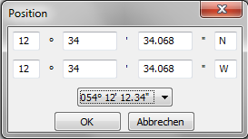
Man kann das Eingabe-Format mit dem Klappmenü wechseln. In der Spalte Position wird
jedoch immer
das in Optionen definierte Format eingefügt.
Spalte KüG
Kurs über Grund (COG, Course over Ground).
Wird bei eingeschaltetem GPS automatisch eingetragen.
Spalte KdW
Kurs durch Wasser (Heading).
Ist ein NMEA-Gerät mit diesen Daten angeschlossen, werden sie automatisch eingefügt.
Spalte FüG
Fahrt über Grund (SOG, Speed over Ground).
Wird bei eingeschaltetem GPS automatisch eingetragen.
Spalte FdW
Fahrt durch Wasser (STW, Speed through Water).
Ist ein NMEA-Gerät mit diesen Daten angeschlossen, werden sie automatisch eingefügt.
Spalte Tiefe
Ist ein NMEA-Gerät mit diesen Daten angeschlossen, werden sie automatisch eingefügt.
Spalte Notizen
Eingabe des gewünschten Textes. Mit Umschalttaste-Enter neue Zeile.
Bei einem Ereignis und aktivem GPS wird automatisch der Text von Optionen/Verhalten eingefügt.
Es gibt drei weitere Alternativen:
Manuell
Geben Sie Text von Hand ein.
Mit Popup-Menü
Rechtsklick in die Spalte und es erscheint das Menü mit den Namen der Textblöcke oben.
Das sind die oft benutzten Textblöcke.
Ein Klick auf den Namen eines Textblocks fügt den Text in der Spalte ein.
Wie man Textblöcke erzeugt, die oben im Menü angezeigt werden, ist hier beschrieben.
Mit Textblöcken
Nicht so oft verwendete Textblöcke.
Rechtsklick in die Spalte und wähle im Menü 'nutze Textblöcke...'.
Klick in dem Knoten 'Texte nur mit diesem Dialog' auf das + Symbol
und wähle das + Symbol im Knoten 'Notizen (Navigation)'.
Wähle nun einen Textblock und drücke OK.
Für eine Erklärung klicken Sie bitte in das Bild, in die Felder oder Button / Die Laschen bringen Sie zum nächsten Bild.
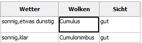
Spalte Barometer
Spalte Hygrometer
Spalte Luft
Nur manuelle Eingabe von Daten.
Anzeige der Luft-Temperatur in °C oder °F.
Wählen in Optionen/Abkürzungen.
Spalte Wasser
Ist ein NMEA-Gerät mit diesen Daten (Wasser-Temparatur) angeschlossen, erfolgt Eintrag automatisch.
Anzeige der Wasser-Temperatur in °C oder °F.
Wählen in Optionen/Abkürzungen.
Spalte Windrichtung
Ist ein NMEA-Gerät mit diesen Daten (Windrichtung) angeschlossen, erfolgt Eintrag automatisch.
Bei manueller Eingabe werden die Definitionen aus Optionen/Abkürzungen (unten) verwendet.
Spalte Windstärke
Ist ein NMEA-Gerät mit diesen Daten (Windstärke) angeschlossen, erfolgt Eintrag automatisch.
m/s, kn, km/h - Wahr oder Relativ - hängt ab vom NMEA-Gerät.
Bei manueller Eingabe werden die Definitionen aus Optionen/Abkürzungen (unten) verwendet.
Manuell
Eingabe des Textes von Hand. Neue Zeile mit Strg+Enter.
Mit Popup-Menü
Rechtsklick in die Spalte und es erscheint das Menü mit den Namen der Textblöcke oben.
Das sind die oft benutzten Textblöcke.
Ein Klick auf den Namen eines Textblocks fügt den Text in der Spalte ein.
Wie man Textblöcke erzeugt, die oben im Menü angezeigt werden, ist hier beschrieben.
Mit Textblöcken
Nicht so oft verwendete Textblöcke.
Rechtsklick in die Spalte und wähle im Menü 'nutze Textblöcke...'.
Klick in dem Knoten 'Texte nur mit diesem Dialog' auf das + Symbol
und wähle das + Symbol im Knoten 'Wetter'.
Wähle nun einen Textblock und drücke OK.
Spalte Wolken
Es gibt zwei Alternativen:
Manuell
Eingabe des Textes von Hand.
Mit Rechtsklick-Menü
In dem Menü sieht man die gebräuchlisten Wolkentypen.
Wählt man einen Typ, erscheint ein Bild des Wolkentyps rechts oder links. Ein Klick darauf fügt den Typ in die Spalte ein.
Wählt man ein Layout, das 'Wolken' enthält, wird das Bild der Wolke im Browser/ODT-Programm angezeigt.
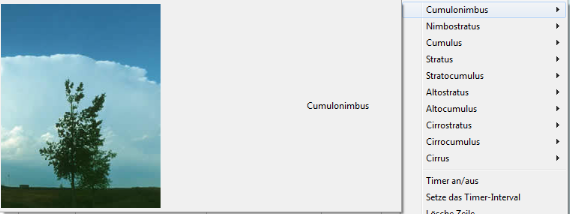
Spalte Sicht
Es gibt drei Alternativen:
Manuell
Eingabe des Textes von Hand. Neue Zeile mit Strg+Enter.
Mit Popup-Menü
Rechtsklick in die Spalte und es erscheint das Menü mit den Namen der Textblöcke oben.
Das sind die oft benutzten Textblöcke.
Ein Klick auf den Namen eines Textblocks fügt den Text in der Spalte ein.
Wie man Textblöcke erzeugt, die oben im Menü angezeigt werden, ist hier beschrieben.
Mit Textblöcken
Nicht so oft verwendete Textblöcke.
Rechtsklick in die Spalte und wähle im Menü 'nutze Textblöcke...'.
Klick in dem Knoten 'Texte nur mit diesem Dialog' auf das + Symbol
und wähle das + Symbol im Knoten 'Sicht'.
Wähle nun einen Textblock und drücke OK.
.
Für eine Erklärung klicken Sie bitte in das Bild, in die Felder oder Button / Die Laschen bringen Sie zum nächsten Bild.
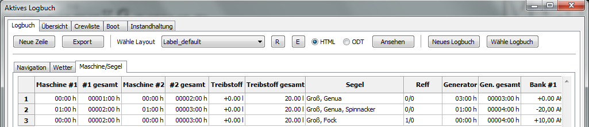
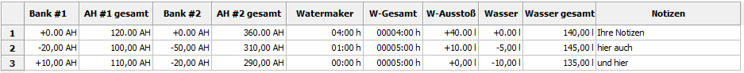
Stunden/Minuten gesamt
Die folgenden Formate werden unterstützt (Beispiel 1 Stunde 30 Minuten):
1:30
1,5
1.5
Achtung !
Das Eingangs-Format hat sich geändert gegenüber der vorherigen Spalte,
weil einige Geräte die Minuten als Bruchzahl anzeigen !
Spalte Treibstoff
Spalte Wasser
Nur manueller Eintrag von Daten.
Plus oder Minus bei Tanks:
Wird der Tank gefüllt, setze ein Plus-Zeichen, Entnahme setzt das Minus-Zeichen automatisch.
Spalte Treibstoff gesamt
Spalte Wasser gesamt
Nur manueller Eintrag von Daten.
Sind Daten in Spalten 'Treibstoff' oder 'Wasser' eingesetzt, wird die Spalte automatisch berechnet. Werden Daten hier eingesetzt, wird der +/- Betrag in 'Treibstoff' oder 'Wasser' eingefügt.
Verwenden kann man 1/2, 1/4..... wenn ein Wert für die Tanks in Optionen/Kapazität angegeben wurde.
Spalte Segel
Es gibt drei Alternativen:
Manuell
Eingabe von Text von Hand. Neue Zeile mit Strg+Enter.
Mit Popup-Menü
Rechtsklick in die Spalte und es erscheint das Menü mit den Namen der Textblöcke oben.
Das sind die oft benutzten Textblöcke.
Ein Klick auf den Namen eines Textblocks fügt den Text in der Spalte ein.
Wie man Textblöcke erzeugt, die oben im Menü angezeigt werden, ist hier beschrieben.
Mit Textblöcken
Nicht so oft verwendete Textblöcke.
Rechtsklick in die Spalte und wähle im Menü 'nutze Textblöcke...'.
Klick in dem Knoten 'Texte nur mit diesem Dialog' auf das + Symbol
und wähle das + Symbol im Knoten 'Segel'.
Wähle nun einen Textblock und drücke OK.
Spalte Reff
Es gibt drei Alternativen:
Manuell
Eingabe von Text von Hand. Neue Zeile mit Strg+Enter.
Mit Popup-Menü
Rechtsklick in die Spalte und es erscheint das Menü mit den Namen der Textblöcke oben.
Das sind die oft benutzten Textblöcke.
Ein Klick auf den Namen eines Textblocks fügt den Text in der Spalte ein.
Wie man Textblöcke erzeugt, die oben im Menü angezeigt werden, ist hier beschrieben.
Mit Textblöcken
Nicht so oft verwendete Textblöcke.
Rechtsklick in die Spalte und wähle im Menü 'nutze Textblöcke...'.
Klick in dem Knoten 'Texte nur mit diesem Dialog' auf das + Symbol
und wähle das + Symbol im Knoten 'Reff'.
Wähle nun einen Textblock und drücke OK.
Spalte Batterie Bank #1
Spalte Batterie Bank #2
Nur manuelle Eingabe von Daten.
Erzeugt oder verbraucht in den Batterie Bänken:
Wird Energie erzeugt, verwendet man das Plus-Zeichen, sonst wird ein Minus-Zeichen automatisch voran gestellt.
Spalte AH Batterie Bank #1 gesamt
Spalte AH Batterie Bank #2 gesamt
Nur manuelle Eingabe von Daten.
Werden die Spalten Batterie Bank #1/#2 nicht verwendet, wird der Betrag berechnet und hier eingefügt.
Wurde ein Wert für Batterie Bank #1/#2 in Optionen/Kapazität eingesetzt, kann 1/2 1/4.... eingegeben werden.
Spalte Wassermacher Ausstoß
Wurde ein Wert für den Wassermacher-Ausstoß pro Stunde gesetzt, wird diese Spalte automatisch berechnet.
Spalte Notizen
Gewünschten Text hier eingeben. Neue Zeile mit Umschalttaste-Enter.
Bei einem Ereignis und aktiviertem GPS wird der Text von Optionen/Verhalten automatisch eingesetzt.
Es gibt drei weitere Alternativen:
Manuell
Eingabe Text von Hand.
Mit Popup-Menü
Rechtsklick in die Spalte und es erscheint das Menü mit den Namen der Textblöcke oben.
Das sind die oft benutzten Textblöcke.
Ein Klick auf den Namen eines Textblocks fügt den Text in der Spalte ein.
Wie man Textblöcke erzeugt, die oben im Menü angezeigt werden, ist hier beschrieben.
Mit Textblöcken
Nicht so oft verwendete Textblöcke.
Rechtsklick in die Spalte und wähle im Menü 'nutze Textblöcke...'.
Klick in dem Knoten 'Texte nur mit diesem Dialog' auf das + Symbol
und wähle das + Symbol im Knoten 'Notizen (Maschine/Segel)'.
Wähle nun einen Textblock und drücke OK.
Die Statuszeile
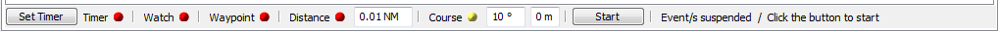
In der Statuszeile kann ein Ereignis gestartet, unterbrochen, wieder aufgenommen oder gestoppt werden.
Ein roter Punkt bezeichnet ein gestopptes Ereignis, grün ein laufendes Ereignis und gelb ein unterbrochenes Ereignis.
Zum Start eines Ereignisses klickt man auf den roten Punkt, der dann von rot auf grün wechselt.
Zum Unterbrechen aller laufender Ereignisse (grün) klickt man den Stop Button. Alle laufenden Ereignis-Punkte wechseln auf gelb zur Pause-Anzeige.
Alle neu gestarteten Ereignisse pausieren jetzt auch (gelb). Zum Starten aller pausierenden Ereignisse klickt man auf den 'Start'-Button.
Zum Stopp eines Ereignisses (grün oder gelb) klickt man auf den Punkt, er wechselt auf rot.
Wenn OpenCPN mit laufenden Ereignissen (grün) geschlossen wird, sind diese Ereignisse beim nächsten Start unterbrochen (gelb).
Setzen eines Ereignisses:
Timer-Ereignis
Vor dem Starten eines Timers klicken Sie auf den 'Timerintervall'-Button.
Dieser Dialog erscheint:
Normaler Timer
Wähle Stunde und Minuten.
Stunden Timer
Wähle das Stunden-Intervall -jede Stunde, alle 2 Stunden etc.- und die Minuten der Stunde. Eingabe von Minuten wie gewünscht.
Zum Löschen einer oder aller Zeilen in der Tabelle das Rechtsklick-Menü verwenden.
z.B. Zeit jetzt = 08:10, Stunden-Intervall = 2 h, Minuten = 30
erster Logbuch-Eintrag um 08:30, nächste Einträg um 10:30, 12:30.....
Individueller Timer
Hier kann frei eingetragen werden, wann ein Logbuch-Eintrag gemacht werden soll.
Geben Sie so viel Stunden/Minuten ein, wie gewünscht.
Zum Löschen einer oder aller Zeilen in der Tabelle das Rechtsklick-Menü verwenden.
*Anmerkung
In einem 24-Stunden-Land oder wenn in Optionen das 24-Stunden-Format gewählt ist, wird keine AM/PM Spalte angezeigt.
*Tipp
Beim 12-Stunden-Format geben Sie Stunden im 24-Stunden-Format ein, die AM/PM-Zeichen werden automatisch eingesetzt.
Klick OK und starte das Ereignis mit Klick auf den roten Punkt.
Läuft das Timer-Ereignis bereits (grün), muß nicht wieder auf den Timer-Punkt geklickt werden.
Nur bei pausierten Ereignissen (gelb) klickt man auf den 'Start'-Button, weil sonst der Timer nicht startet.
Es ist nur ein Timer erlaubt, mischen von zwei oder drei Timern geht nicht.
Wache-Ereignis
Zur Verwendung dieses Ereignisses müssen Daten in der Wachliste eingegeben worden sein - beschrieben hier oder in diesem Beispiel.-
Die Namen der Wachmitglieder werden (oder einzelner Name) werden automatisch im Logbuch in Spalte 'Wache' eingesetzt, wenn die Wache wechselt.
Klick auf den Punkt zum Start des Ereignisses (grün).
Wenn die Punkte auf gelb wechseln, pausieren alle Ereignisse. In dem Fall muß auf den 'Start'-Button geklickt werden.
Wegpunkt-Ereignis
Es muß eine Route mit Wegpunkten im OpenCPN Hauptprogramm aktiviert sein.
Wird ein Wegpunkt erreicht oder passiert, wird ein Logbuch-Eintrag eingefügt.
Klick auf den Punkt zum Start des Ereignisses (grün).
Wenn die Punkte auf gelb wechseln, pausieren alle Ereignisse. In dem Fall muß auf den 'Start'-Button geklickt werden.
Distanz-Ereignis
Zunächst die Distanz in der Textbox eingeben.
Wird die Distanz erreicht, wird ein Logbuch-Eintrag eingefügt.
Klick auf den Punkt zum Start des Ereignisses (grün).
Wenn die Punkte auf gelb wechseln, pausieren alle Ereignisse. In dem Fall muß auf den 'Start'-Button geklickt werden.
Kurs-Ereignis
Erst den Betrag in Grad und eine Verzögerung in Minuten eingeben.
Ändert sich der Kurs um einen Betrag größer als diese Gradzahl, kommt dieses Ereignis. Der neue Kurs wird nach der Verzögerung in Minuten im Logbuch eingetragen.
z.B. Kurs 45°, Verzögerung 5 Minuten.
Wind = 45°, Sie segeln gegen den Wind bei 0°.
Nun gehen Sie über den Bug auf 94°.
Ohne eine Verzögerung (= 0 Minuten) kommt das Ereignis bei 90° (was nicht der aktuelle Kurs ist), daher ist es besser, eine Verzögerung mit ein paar Minuten zu setzen.
Klick auf den Punkt zum Start des Ereignisses (grün).
Wenn die Punkte auf gelb wechseln, pausieren alle Ereignisse. In dem Fall muß auf den 'Start'-Button geklickt werden.
Start/Stop-Button
Mit diesem Button pausieren (Punkte = gelb) oder reaktivieren (Punkte = grün) Sie alle laufenden/pausierten Ereignisse.
Text
Der Text erklärt etwas den Status der Ereignisse.
Überblick
Die Tabelle 'Überblick' zeigt eine Zusammenfassung der Logbuch Daten (eines oder alle).
Wählt man 'Gehe zu Route' im Rechtsklick-Menü, wird die Route unter der Tabelle 'Navigation' angezeigt oder das alte Logbuch wird geladen und die Route angezeigt.
Ein Doppel-Klick in den Spalten-Kopf versteckt eine Spalte.
Die Wahl von 'Zeige alle Spalten' im Rechtsklick-Menü zeigt alle Spalten.
Für eine Erklärung klicken Sie bitte in das Bild, in die Felder oder Button. / Die Laschen bringen Sie zum nächsten Bild.
Aktuelles Logbuch
Zeigt nur die Daten im aktiven Logbuch.
Alle Logbücher
Zeigt Daten aller verfügbarer Logbücher.
Wähle Logbuch
Öffnet einen Dialog zur Wahl eines alten Logbuchs.
Daten
Der Spalten-Kopf ist selbsterklärend.
Crewliste / Wachliste
Hier gibt es zwei Tabellen. Eine ist die Crewliste, die andere die Wachliste.
Zwischen den Tabellen ist ein verschiebbarer Fenster-Trenner zum Verschieben mit der Maus nach unten oder oben.
Innerhalb einer Tabelle haben die Tabulatur-/Cursortasten die gleiche Funktion wie im Logbuch.
Beide Tabellen haben ein Rechtsklick-Menü.
Die Relation zwischen der Crew-/Wachliste und dem Logbuch wird vielleicht am Besten mit einem kleinen Beispiel erklärt.
Haben Sie schon Daten in der Crewliste, sind Schritt 1 und 2 nicht nötig.
Haben Sie Daten in der Wachliste, klicken Sie bitte erst auf den 'Löschen'-Button.
Klicke 3x auf 'neues Crewmitglied' in der Crewliste
Gebe nur Vorname, Zuname ein
In der Wachliste gebe in Spalte 'Wachdauer' z.B. 3.30 ein
Drag'n Drop drei Crewmitglieder von der Crewliste in die 1., 2. und 3. Wache
Klick 'Berechne' - das ist alles, was zu tun ist
*Optional
Wechsel zur Logbuch Tabelle und klicke 'Neue Zeile' - die Crewmitglieder erscheinen in der 'Wache'-Spalte
*Optional
Man kann auch das Wache-Ereignis starten.
Es gibt eine Reihe weiterer Optionen in der Wacheliste wie individuelle Wachzeiten, statische Wachmitglieder, teilen/verbinden von Wachen usw., im Detail erklärt hier.
Rechtsklick-Menü's
Crewliste und Wachliste haben unterschiedliche Menü's.
Crewliste
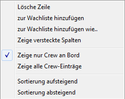
Lösche Zeile
Löscht ein Crewmitglied von der Crewliste.
Zeige versteckte Spalten
Zeigt versteckte Spalten wieder an.
Zeige nur Crew an Bord
Zeigt nur Zeilen mit einem 'Ja' in der Spalte 'an Bord'.
Zeige alle Crew-Einträge
Zeigt alle Einträge in der Crewliste.
Wenn aktiviert, wird 'Zeige nur Crew an Bord' deaktiviert und alle Einträge werden angezeigt.
Sortiere aufsteigend
Sortiert die Einträge der Spalte, in die der Mauszeiger weist.
Sortiere absteigend
Sortiert die Einträge der Spalte, in die der Mauszeiger weist.
Wachliste
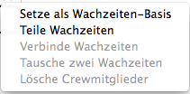
Setze als Wachzeiten-Basis
Wurden für einen bestimmten Tag Änderungen gemacht, z.B. am Tag 3 Wachen verbunden weil ein Mitglied seekrank und ausgefallen, dann kann der Tag als neue
Wachzeiten-Basis festgelegt werden.
Falls erforderlich, lösche das nicht verwendete Mitglied und klicke 'Berechnen'.
Teile Wachzeiten Teilt die Wache in zwei Wachen.
Bitte nur eine Spalte wählen.
Werden mehr als eine Spalte gewählt, ist diese Option deaktiviert.
z.B. 1. Wache mit 4 Stunden wird geteilt in 1. Wache 2 Stunden und 2. Wache 2 Stunden.
Verbinde Wachzeiten
Wenn nicht mindestens zwei Spalten gewählt sind, ist diese Option deaktiviert.
Wähle erst die gewünschten Spalten mit Ziehen über den Spalten-Kopf oder mit Strg+LinkerMausklick.
Tausche zwei Wachzeiten
Wurden nicht zwei Spalten gewählt, ist diese Option deaktiviert.
Zum Wechsel der Mitglieder von zwei Wachen wähle im Spaltenkopf zwei Spalten nur mit Ziehen über die zwei Köpfe mit der Maus oder verwende Strg+LinkerMausklick.
Lösche Crewmitglieder
Wenn nicht mindestens eine Spalte gewählt ist, ist diese Option deaktiviert.
Wähle erst die gewünschten Spalten mit Ziehen über den Spaltenkopf oder mit Strg+LinkerMausklick.
Für eine Erklärung klicken Sie bitte in das Bild, in die Felder oder Button. / Die Laschen bringen Sie zum nächsten Bild.
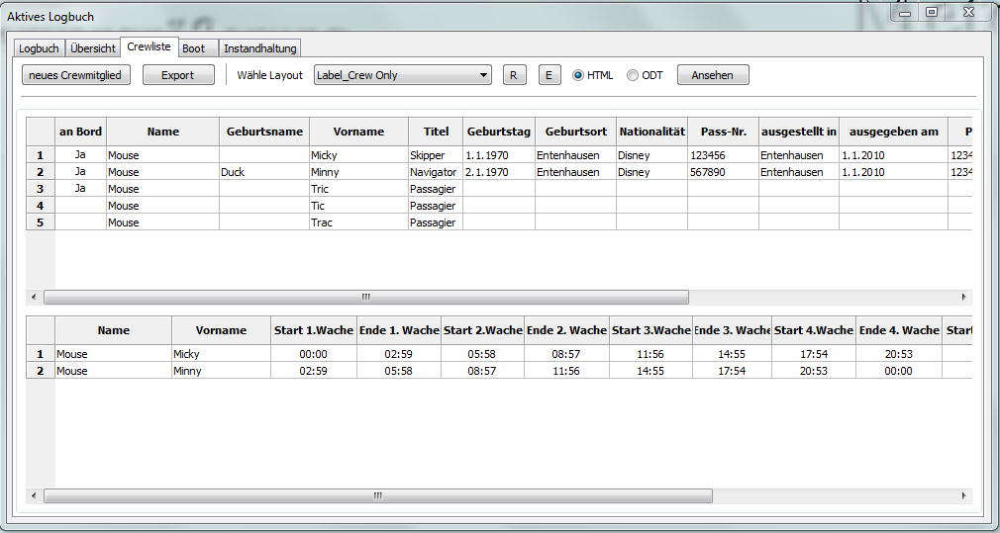
neues Crewmitglied
Fügt der Crewliste eine neue Zeile hinzu.
an Bord
Anhaken/Abhaken mit einem Klick, ob eine Person an Bord ist oder nicht.
Beim Hinzufügen einer Person zur Wachliste
muß
sie an Bord sein.
Felder in der Crewliste
Die Felder sind selbsterklärend durch ihre Spalten-Köpfe.
Es müssen nicht alle Felder ausgefüllt werden (außer Name, Vorname).
Die Reihenfolge der Zeilen in der Crewliste kann mit Drag'n Drop einer Zeile geändert werden.
Mit Drag'n Drop kann auch ein Crewmitglied zur Wachliste kopiert werden.
Spaltenköpfe in Wachliste
Ziehen über den Spaltenkopf oder Verwenden von Strg-LinkerMausklick zur Wahl von Spalten.
Spalten in der Wachliste
Die Felder sind selbsterklärend durch ihre Zeilen/Spalten-Köpfe.
In die Wachliste kopieren
Wird ein Crewmitglied mit Drag'n Drop in die Wachliste kopiert, kann angegeben werden, ob der volle Name, der Zuname oder der Vorname genommen werden soll.
Start-Datum
Wähle das Start-Datum der Reise im Kalender-Dialog.
Start-Zeit
Gebe die Start-Zeit der Reise ein, bitte verwende das 24-Stunden-Format.
Tag(e)
Ungefähre Dauer der Reise eingeben.
Berechne
Klick 'Berechne' wenn alle Änderungen bei den Wachzeiten gemacht wurden und Crewmitglieder von der Crewliste eingefügt sind
Datum, Zeit, Tag(e) und der Button 'Berechne' sind nun deaktiviert.
Jetzt werden die Wachzeiten berechnet, die Crewmitglieder verschoben (wenn nötig) und das Ergebnis gespeichert. Die aktuelle Wache wird grün markiert.
Sie sind nun im Tages-Modus. Alle folgenden Änderungen (Teilen/Verbinden/Änderung Crewmitglied) betreffen jetzt nur noch diesen Tag.
Man kann diesen Tag (wenn gewünscht) als neue Wach-Basis setzen oder mit Klick auf 'Reset' zurück zur Wach-Basis gehen.
Reset
Setzt die Wach-Basis (Tag = 0).
Der Button 'Berechne' wird aktiviert.
Löschen
Löscht die Tabelle und alle gespeicherten Wachdaten.
Der Button 'Reset' ist nun deaktiviert.
< Jetzt >
Gehe mit < einen Tag zurück oder mit > einen Tag vor. 'Jetzt' springt zum aktuellen Tag/Zeit.
Tag
Zeigt den angegebenen Tag.
Anzeige
Wählt wie viele Tage im Browser oder ODT-Programm angezeigt werden sollen.
Wachliste Beispiel
Bitte erzeugen Sie für dieses Beispiel die folgenden sieben Crewmitglieder in der Crewliste:
Micky,Minny Mouse
Donald,Daisy Duck
Tic,Tric,Tac Mouse
Klicken Sie den 'Löschen'-Button in der Wachliste für eindeutige Ausgangsbedingungen.
Das heutige Datum und Zeit werden bei Klick auf 'Löschen' automatisch eingesetzt.
Ändern Sie Startdatum und -Zeit und die voraussichtliche Dauer der Reise (wenn gewünscht).
Die Daten in der 1. Wache ändern sich entsprechend.
Geben Sie jetzt die meist übliche Wachzeit ein z.B. 4 Stunden.
Man erhält dies Ergebnis (Bild abgeschnitten) mit 6 Wachen.
Für volle Stunden muß nur die Zahl eingegeben werden, kein Trennzeichen erforderlich.
Für Eingabe von Minuten kann eines der folgenden Formate benutzt werden:
4:30 oder 4.30 oder 4,30 oder 0430
Von 12:00 PM bis 08:00 PM soll es Wachen mit 2 Stunden geben.
Im Rechtsklick-Menü wähle 'Teile Wachzeiten' bei 2. Wache.
Das Gleiche bei 4. Wache.
Als Ergebnis erhält man 8 Wachen.
Drag'n Drop diese Crewmitglieder fortlaufend in die Wachliste. Niemals eine Lücke (leere Zelle) lassen z.B. zwischen 1. und 3. Wache, nur am Ende!!
Läßt man alle Mitglieder-Zellen leer, muß man manuell (Drag'n Drop) die Mitglieder für jeden Tag und jede Wache eintragen.
Klicke den 'Berechne'-Button.
Die Wach-Basis (= Tag 0) und die Wachliste werden für 10 Tage berechnet und gespeichert. Die aktuelle Wache hat einen grünen Hintergrund, wenn sie im Zeitrahmen der Startzeit
der Reise liegt.
Man kann jetzt das Wach-Ereignis im Logbuch benutzen (klick den Wache-Punkt in der Logbuch-Statuszeile) oder zeige die Wachen im Browser/ODT-Programm.
Klick den Vorwärts-Button zur Ansicht des nächsten Tags und den 'Jetzt'-Button zum Zurückgehen zur aktuellen Wache.
Alle jetzt gemachten Änderungen (z.B. Teilen einer Wache) erfolgen nur für diesen Tag (Hinweis in der Textbox).
Fügen Sie ein Crewmitglied (Tric Duck) der 3. Wache des ersten Tages hinzu und verwenden Sie die Vor-/Zurück-Buttons, um zu sehen, was gemeint ist.
Um Änderungen an allen Wachen zu machen, klickt man den 'Reset'-Button. Das führt zur Wach-Basis (= Tag 0).
Fügen Sie jetzt ein Crewmitglied (Tric Duck) der 2. Wache in der Wachliste hinzu und klicken den 'Berechne'-Button.
Man sieht die Berecnung überschreibt alle Änderungen.
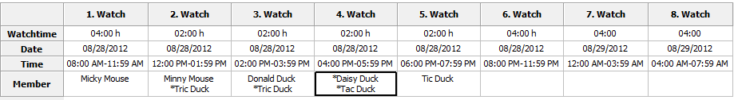
Klick den 'Reset'-Button nochmal und füge Crewmitglieder wie im Bild hinzu.
Lösche das Mitglied in der 5. Wache.
Klick auf den Spaltenkopf (5. Wache), im Rechtsklick-Menü wähle 'Lösche Crewmitglieder'.
*Tipp: Zur Auswahl mehrerer Spalten über Spaltenkopf ziehen oder Strg-LinkerMausklick verwenden.
Nun machen wir einige Crewmitglieder statisch für eine Wache.
Klick in die 2. Wache in die Mitglieder-Zelle, wähle Tric, gehe zum ersten Zeichen und füge einen Stern ein.
Mache das mit allen anderen Mitgliedern wie im Bild.
Klick 'Berechne'.
Die Bilder zeigen Tag 1 und Tag 2.
Wie man sieht, hat an Tag 2 in der 2. Wache Tric nicht gewechselt, aber Minny zu Donald.
Die 4. Wache ist komplett statisch und ändert sich nicht.
Klick auf den Vor/Zurück-Button, um zu sehen, was gemeint ist.
Wähle mit Vor/Zurück-Button den Tag 2.
zum Wechseln zweier Wachen wähle zwei Wachen mit Ziehen über die Spaltenköpfe oder mit Strg-LinkerMausklick.
Wähle im Rechtsklick-Menü die Option 'Tausche zwei Wachzeiten'.
Zum Kopieren aller Mitglieder einer Wache und Löschen des Inhalts ziehe die 'Mitglieder'-Zelle auf eine andere. Kopiere die 2. Wache zur 1. Wache.
Zum Kopieren eines einzelnen Mitglieds einer Wache klick in die 'Mitglieder'-Zelle, verschiebe mit der Maus das (markierte) Mitglied zu der gewünschten Wache..
Mache das mit der 1. Wache (Minny Mouse).
Das Ergebnis sollte wie in diesem Bild aussehen.
Minny Mouse wird jetzt seekrank.
Um die 2. und die 3. Wache zu verbinden, kick im Spaltenkopf auf 2. Wache. Im Rechtsklick-Menü wähle 'Lösche Crewmitglieder'.
Ziehe die 'Mitglieder'-Zelle der 3. Wache zur 2. Wache.
Ziehe über die Spaltenköpfe der 2. und 3. Wache, wähle im rechtsklick-Menü die Option 'Verbinde Wachzeiten'.
Verbinde die 4. und die 5. Wache, hier muß man nicht die Crewmitglieder löschen und kopieren. Die linke Mitglieder-Zelle behält immer ihre Daten.
In der 8. Wache lösche das Crewmitglied und ziehe Daisy von der Crewliste.
Das Ergebnis sollte wie dieses Bild aussehen.
Beachten Sie, daß alle Änderungen nur für diesen Tag (2) sind. Gehe zum Test auf Tag 1 oder 3.
Wenn sich Minny am nächsten Tag wieder wohl fühlt, macht das nichts.
Man muß nicht alle Änderungen für den folgenden Tag von Hand machen, sondern kann die Option 'Setze als Wachzeiten-Basis' im Rechtsklick-Menü verwenden.
Das Startdatum hat sich geändert auf den 8/29/2012.
Es müssen nur die Wachen von 1 bis 3 wiederholt werden.
Ziehe über die Spaltenköpfe 4 bis 6 und wähle im Rechtsklick-Menü 'Lösche Crewmitglieder'.
Jetzt ist man auf dem gleichen Stand wie dies Bild in dem Beispiel vorher.
Machen Sie weitere gewünschte Änderungen und klicken Sie 'Berechne'.
In diesem Beispiel wurde gezeigt, wie man Wachen teilt und verbindet, aber Wachzeiten können auch individuell eingetragen werden.
Starte ein neues Beispiel mit dem 'Löschen'-Button.
Gebe in der 1. Wache in der Zelle 'Wachdauer' 20 ein. Das Ergebnis ist 1. Wache = 20 Stunden, die 2. Wache = 4 Stunden.
Damit kann man sehen, daß Wachen immer für 24 Stunden gelten.
Gebe nun in der 1. Wache eine 4 ein und kümmern sich nicht um angehängte Wache. Gebe in der 2. Wache eine 2 ein.
Das Gleiche in der 3., 4. und 5. Wache. Gebe in der 6. und 7. Wache eine 4 ein.
Man sollte das gleiche Ergebnis wie in diesem Bild bekommen, nur auf einem anderen Weg. Nehmen Sie den Weg, der Ihnen am Besten gefällt.
Boot
Die Tabelle Boot hat zwei Bereiche:
Boot und Zubehör
Die Button (Export, R, E, Zeige), die Radiobutton (HTML, ODT) und die Klappmenü-Box haben die gleichen Funktionen wie in der Logbuch Tabelle.
In der Sektion 'Boot' gibt man die Daten des Boots ein.
Es müssen nicht alle Felder ausgefüllt werden, aber wenn man die Standard Layouts verwendet, sollten folgende Daten da sein:
(Boots)Name, Heimathafen, Rufzeichen und Register.-Nr.
Verwendung der Sektion 'Zubehör' ist optional.
Hier gibt man z.B. Zubehör ein, das im Hafen "verloren" gehen könnte wie z.B. ein Außenborder.
Vielleicht kann es als Beweis verwendet werden, daß dieses Zubehör beim Einlaufen in den Hafen an Bord war.
'Zubehör' soll nicht als Stau-Manager verwendet werden, dazu ist das Plugin 'FindIt' besser geeignet.
Für eine Erklärung klicken Sie bitte in das Bild, in die Felder oder Button. / Die Laschen bringen Sie zum nächsten Bild.
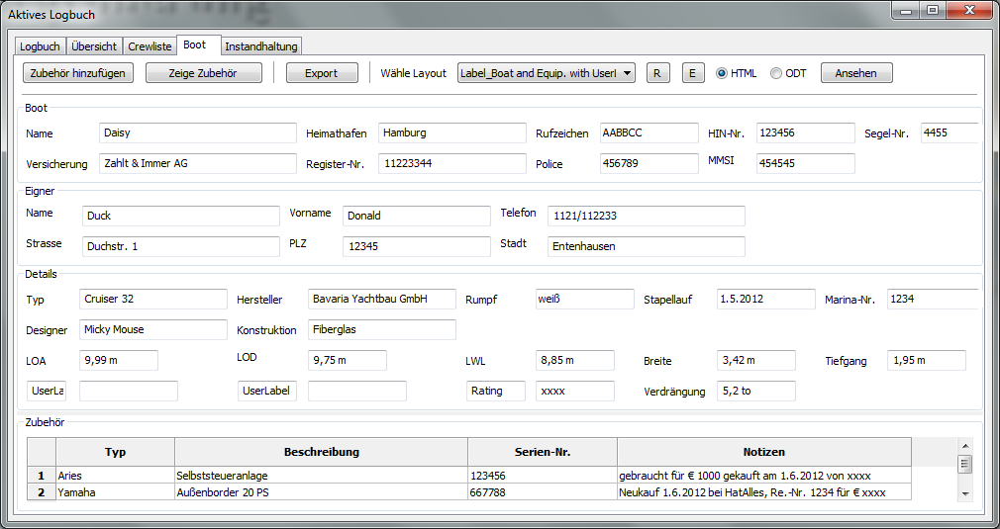
Zubehör hinzufügen
Mit Klick auf diesen Button wird der Bereich 'Zubehör' vergrößert und eine neue Zeile angehängt.
Zeige Zubehör
Vergrößert/verkleinert den Bereich 'Zubehör'.
Man kann auch den Separator zwischen 'Boot' und 'Zubehör' mit Ziehen verschieben.
Bootdaten
optional enter data here
Es müssen nicht alle Felder ausgefüllt werden, aber wenn man die Standard Layouts verwendet, sollten folgende Daten da sein:
(Boots)Name, Heimathafen, Rufzeichen und Register.-Nr.
UserLabel
Schreibe eigene Label, z.B. 'Motor'.
Zur Anzeige dieser Label im Browser/ODT-Programm wähle bitte ein Layout, das 'with Userlabels' enthält.
Typ
Typ oder Hersteller des Zubehörs.
Beschreibung
Eine Beschreibung des Zubehörs.
Serien-Nr.
Die Serien-Nummer des Zubehörs.
Notizen
Ihre Notizen.
Instandhaltung
Die Instandhaltungs-Tabelle hat drei Abschnitte:
Service
(wiederkehrende Instandhaltung, z.B. Motor-Ölwechsel)
Reparaturen (wie eine Zu-Erledigen-Liste)
Zubehör kaufen (für die zwei vorherigen Tabellen oder vom Plugin 'FindIt')
Die Button (Export, R, E, Zeige), die Radiobutton (HTML, ODT) und die Klappmenü-Box haben die gleichen Funktionen wie in der Logbuch Tabelle.
Mit Klick auf den Spalten-Kopf wird die Tabelle nach dieser Spalte sortiert.
In allen Spalten gibt es ein Rechtsklick-Menü.
Rechtsklick-Menü
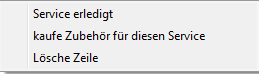
Service erledigt
Die Hintergrund-Farbe der Zeile wechselt auf grün, die Frame-Farbe wird neutral, die Priorität wird auf 5 gesetzt und der Startwert von der letzten Logbuch-Zeile wird eingetragen.
kaufe Zubehör für diesen Service
bzw. Reparatur
Fügt eine Zeile der Tabelle 'Zubehör kaufen' hinzu und übernimmt die Daten von der Tabelle 'Service' oder 'Reparaturen' automatisch.
Lösche Zeile
Genau das.
Löscht man die Zeile und hat vorher 'kaufe Zubehör für diesen Service' gewählt, wird die angefügte Zeile in 'Zubehör kaufen'
nicht
auch automatisch gelöscht.
Ein Beispiel für die Tabelle 'Service':
Es soll alle 100 Stunden Öl gewechselt werden.
Wähle in der Spalte 'Wenn' in der Klappmenü-Box 'Maschine #1'.
Der Startwert ist gleich dem letzten Logbuch-Eintrag (Maschine/Segel) in der Spalte '#1 gesamt'.
Ändere den Warnwert auf 90 und den Dringendwert auf 100.
*Optional*
Sie müssen einen Kanister Öl kaufen.
Mit einem Rechtsklick in diese Zeile kommt man ins Menü. Wähle den Eintrag 'kaufe Zubehör fü diesen Service'. In 'Zubehör kaufen' gebe z.B. ein '3 Kanister Ö xxx'.
Klick für diese Demo den Button 'Neue Zeile' in der Logbuch Tabelle.
Ändere in '#1 gesamt' den Betrag der Motorstunden auf 90. Die Farbe des Frame wechselt zu gelb und der Hintergrund des Felds auch.
Ändere das Feld auf 100, Frame- und Feld-Farbe wechseln zu rot.
Das Öl wurde jetzt gewechselt.
Gehe zur Tabelle 'Instandhaltung', Rechtsklick in die (nun rote) Zeile für Öl.
Wähle den Eintrag 'Service erledigt'.
Die Frame-Farbe wechselt zu neutral, die Zeilen-Farbe wechselt auf grün, Priorität wird auf 5 gesetzt und der Startbetrag von der letzten Logbuch Zeile eingetragen.
Hier starte ein neues Intervall.
Für eine Erklärung klicken Sie bitte in das Bild, in die Felder oder Button. / Die Laschen bringen Sie zum nächsten Bild.
Reparaturen
hier werden Reparaturen ohne ein Intervall eingetragen wie bei einer Zu-Erledigen-Liste.
Die Priorität kann mit der Klappmenü-Box frei gewählt werden. Farben werden nicht geändert wie bei 'Service'.
Es gibt das gleiche Rechtsklick-Menü wie bei 'Service'. Wählt man 'Reparatur erledigt', wird die Priorität auf Null gesetzt.
Mit Klick auf den Spaltenkopf wird die Tabelle nach der Spalte sortiert.
Für eine Erklärung klicken Sie bitte in das Bild, in die Felder oder Button. / Die Laschen bringen Sie zum nächsten Bild.
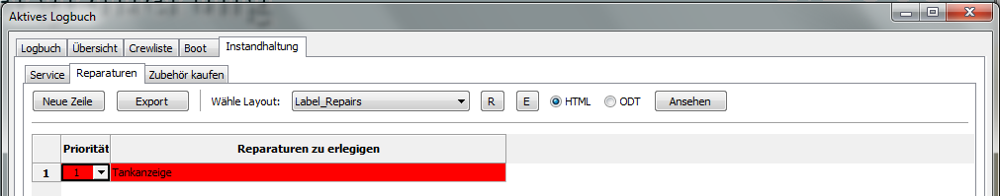
Priorität
Setzt die Hintergrund-Farbe der Zeile.
0 = neutral
1 = rot
2 = hellrot
3 = gelb
4 = hellgelb
5 = grün
Die Priorität in einer Zeile von 'Zubehör kaufen' hängt von der Zeile in 'Reparaturen' oder 'Service' ab.
Reparaturen zu erledigen
Geben Sie hier den Text ein z.B. 'Tankanzeige defekt'.
Zubehör kaufen
Hier kann der Text für Sachen eingetragen werden, die man kaufen möchte.
Es zeigt die Daten von 'Service oder 'Reparaturen' und (wenn installiert und verwendet) vom Plugin 'FindIt'.
Priorität kann frei gewählt werden, Farben werden nicht geändert.
-
Einzige Option im Rechtsklick-Menü ist 'Lösche Zeile'.
Mit Klick in den Spaltenkopf wird die Tabelle nach dieser Spalte sortiert.
Für eine Erklärung klicken Sie bitte in das Bild, in die Felder oder Button. / Die Laschen bringen Sie zum nächsten Bild.
Priorität
Setzt die Hintergrund-Farbe der Zeile.
0 = neutral
1 = rot
2 = hellrot
3 = gelb
4 = hellgelb
5 = grün
Die Priorität einer Zeile von 'Zubehör kaufen' hängt ab von der Zeile in 'Reparaturen' oder 'Service'.
Kategorie
Zeigt, wofür die Daten sind.
Titel
Zeigt den Text von 'Service' oder 'Reparaturen' oder, wenn ein anderes Plugin die Daten liefert, den Namen des Plugins.
Zubehör kaufen
Eingabe des Textes der zu kaufenden Sache.
Das Plugin 'FindIt' setzt die Daten automatisch ein.
Datum
Das geplante Datum zum Kauf der Sachen.
bei
Wo die Sachen gekauft werden sollen.
Ändern eines Layout
Zum Ändern/Erzeugen eines HTML-Layouts braucht man einen HTML-Editor.
In dem HTML-Beispiel wird der freie HTML-Editor KompoZer verwendet.
Er kann hier herunter geladen werden.
Stellen Sie sicher, daß in Optionen
'Pfade'
der Pfad zu dem HTML-Editor gesetzt ist, wenn ein Layout be-/erarbeitet werden soll.
Wählen Sie das Format mit dem Radiobutton (HTML oder ODT).
Wählen Sie das Layout in der Klappmenü-Box.
Klicken Sie den 'E'-Button.
Es öffnet sich der folgende Dialog.
Wähle hier den Radiobutton 'Editiere Layout' und 'OK'.
Der HTML-Editor öffnet mit dem definierten Layout.
Wichtig !
Speichere sofort das Original Layout mit einem anderen Namen im KompoZer (verwende 'Speichern als...' NICHT 'Speichern'),
so daß man nicht das Original überschreibt.
*Optional* wähle einen Namen mit Unterstrich (z.B. Mein_Beispiel.html). Dann kann man nur die eigenen Layouts filtern/anzeigen.
Klick im Logbuch den 'R'-Button, suche und wähle das gerade gespeicherte Layout (mit dem neuen Namen).
Wechsel wieder zum HTML-Programm.
Man sieht, daß alle Einträge ein '#'-Zeichen haben. Das sind Platzhalter, die vom Logbuch-Plugin ersetzt werden.
Die Platzhalter sind in zwei Sektionen unterteilt, Daten und Label. Die Label korrespondieren mit den Spalten-Köpfen in der Tabelle.
Alle Label haben einPrefix L (z.B. #LCOG#).
Ändere als Beispiel den Platzhalter #LCOG# in 'Kurs über Grund'.
Klick den 'Speicher'-Button im KompoZer-Programm.
Wechsel zum Logbuch und klicke auf den 'Zeige'-Button.
Anzeige im Browser
Man kann so alle Label wenn gewünscht überschreiben. Aber ändere niemals die Namen der Daten-Platzhalter.
Löschen unnötiger Daten
Hat man keinen Katamaran oder Motoryacht mit 2 Motoren, kann die zweite Maschine entfernt werden.
Gehe mit der Maus zu #LMOTOR1# und ziehe zu #LMOTOR1T.
Jetzt sollten vier Felder markiert werden.
Drücke Taste 'Del' oder wähle 'Löschen' im Rechtsklick-Menü.
Klick Speichern (KompoZer) und 'Zeige' (Logbuch).
Lösche z.B. auch den Generator und den Wassermacher.
Inhalt verschieben
Notiz: KompoZer scheint Daten nur horizontal richtig zu verschieben. Bitte nicht wählen, wie beschrieben in 'Löschen unnötiger Daten'.
Markiere die Felder #LFUEL# und #FUEL#.
Drücke die Tasten Strg+x
Markiere horizontal die beiden leeren Felder neben #MOTOR#.
Drücke die Tasten Strg+v
Wiederhole das für die Felder #LFUELT# und #FUELT#.
Klick Speichern (KompoZer) und 'Zeigen' (Logbuch).
Verschiebe zum Beispiel die Batterie-Bänke und die Wasser-Daten.
TDas Layout sollte nun so aussehen:
Klick in die letzte Zeile und mit Rechtsklick im Men&uul; wähle 'lösche Tabelle ' und im Untermenü klick 'Zeile(n)'.
Die Zeile ist gelöscht.
Auf diesem Weg kann man auch Spalten löschen (wähle dann 'Spalte(n)').
Klick Speichern (KompoZer) und 'Zeige' (Logbuch).
Erzeuge ein neues Layout
Es ist nicht schwer, ein neues Layout zu erstellen, selbst wenn man noch nie mit HTML gearbeitet hat.
Bei einer Verbindung zum Internet sehen Sie sich bitte dieses Video an: